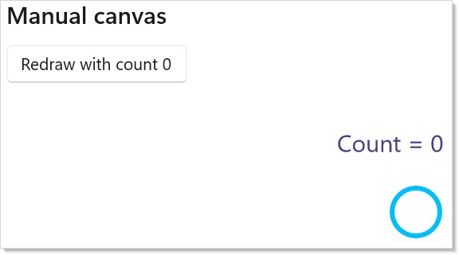
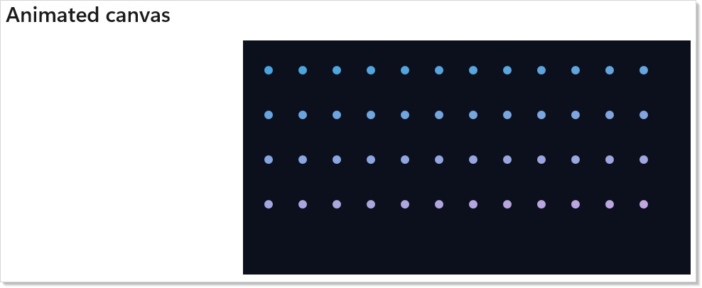
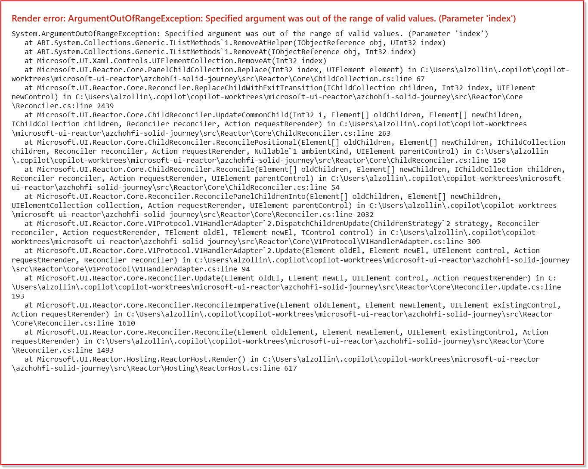

WinUI reference: For the full property surface and design guidance, see Introduction.
Reactor is a retained UI framework: a component renders immutable elements, the reconciler diffs them, and WinUI keeps the controls alive. Win2D is the immediate-mode escape hatch for pixels that are too dynamic or too numerous for retained controls — particle fields, paint surfaces, spectrograms, image editors, and GPU-heavy simulations. Microsoft.UI.Reactor.Advanced keeps that power opt-in so simple apps do not carry Win2D's native payload, while the canvas elements still live inside the same hooks, effects, and reconciliation model as ordinary controls. Think of the canvas as a native WinUI island whose pixels are pulled by Win2D callbacks and whose lifetime, props, and invalidation are driven by Reactor.
Win2D canvas¶
Reactor.Advanced exposes the three Win2D canvas controls as Reactor elements: Win2DCanvas, Win2DAnimatedCanvas, and Win2DVirtualCanvas. Add the package when you need immediate-mode drawing; keep using ordinary components, Animation, and the Extending Reactor controls model for retained UI.
Three canvases, three workloads¶
| Win2D control | When you use it | Threading | Reactor element |
|---|---|---|---|
CanvasControl |
One-shot drawings or invalidate-on-data-change scenes: gauges, chart-like visuals, paint tools. | UI-thread Draw. |
Win2DCanvas |
CanvasAnimatedControl |
Game-loop style: steady Update(args) then Draw(session) at a target frame rate. |
Win2D game thread. | Win2DAnimatedCanvas |
CanvasVirtualControl |
Very large or scrollable surfaces: whiteboards, image editors, multi-megapixel artboards. | UI-thread region draw. | Win2DVirtualCanvas |
All three use CanvasDrawingSession for drawing. They differ in who invalidates and which thread calls you back.
Manual canvas (Win2DCanvas)¶
Use Win2DCanvas(...) when pixels should change only after app state changes. Pass every state value the draw callback depends on as redrawKey; when the key changes during reconciliation, the handler calls CanvasControl.Invalidate().
class ManualCanvasDemo : Component
{
public override Element Render()
{
var (count, setCount) = UseState(0);
return VStack(12,
SubHeading("Manual canvas"),
Button($"Redraw with count {count}", () => setCount(count + 1))
.AutomationName("Redraw manual canvas"),
Win2DCanvas((session, _) =>
{
session.Clear(Colors.White);
session.DrawText($"Count = {count}", 24, 24, Colors.DarkSlateBlue);
session.DrawCircle(90, 96, 20 + count * 3, Colors.DeepSkyBlue, 4);
}, redrawKey: count)
.ClearColor(Colors.White)
.Width(360)
.Height(150)
).Padding(20);
}
}

RedrawKey is intentionally explicit. It prevents hidden redraw loops and makes the retained-to-immediate boundary visible in code: state changes re-render the element, the key changes, and the next canvas frame uses the new captured state.
Caveat:
Win2DCanvasdoes not redraw for arbitrary mutation that Reactor cannot see. IfOnDrawreads a mutable field, a timer, or data updated outside a hook setter, you must either include a changingRedrawKeyin the element or invalidate through a deliberate control ref / command path. For ordinary Reactor state, prefer making the state value (or a version number derived from it) the key.
Animated canvas (Win2DAnimatedCanvas)¶
Use Win2DAnimatedCanvas(...) for steady-tick scenes. The draw loop runs independently of Reactor re-renders, but the state object you pass through drawState survives renders because it comes from UseDrawState.
class AnimatedCanvasDemo : Component
{
public override Element Render()
{
return Memo(ctx =>
{
var dots = ctx.UseDrawState(() => DotField.Create(count: 180, width: 420, height: 220));
var sprite = ctx.UseCanvasResources<CanvasBitmap>(device =>
{
byte[] pixels =
[
0x00, 0x78, 0xD4, 0xFF,
0x50, 0xC8, 0x78, 0xFF,
0xFF, 0xB9, 0x00, 0xFF,
0xD8, 0x3B, 0x01, 0xFF,
];
var bitmap = CanvasBitmap.CreateFromBytes(
device,
pixels,
widthInPixels: 2,
heightInPixels: 2,
Windows.Graphics.DirectX.DirectXPixelFormat.B8G8R8A8UIntNormalized);
return ValueTask.FromResult(bitmap);
});
return VStack(12,
SubHeading("Animated canvas"),
Win2DAnimatedCanvas(
onUpdate: (args, state) => ((DotField)state!).Step(args.Timing.ElapsedTime),
onDraw: (session, _, state) =>
{
var field = (DotField)state!;
session.Clear(Color.FromArgb(255, 12, 16, 28));
field.Draw(session);
if (sprite.Current is { } bitmap)
session.DrawImage(bitmap, 16, 16, new Rect(0, 0, 2, 2), 0.85f);
},
drawState: dots.Current)
.ClearColor(Color.FromArgb(255, 12, 16, 28))
.TargetFps(60)
.Width(420)
.Height(220)
// UseCanvasResources builds the sprite on Win2D's shared device, so the
// canvas must draw with that same device — otherwise the cross-device
// DrawImage raises a fatal stowed exception.
.UseSharedDevice()
).Padding(20);
});
}
}

Read Threading before putting real work in onUpdate or onDraw. Both callbacks run on the Win2D game thread, so they may read a UseDrawState object, but they must not touch WinUI controls. If the loop needs to report state back to Reactor chrome, use a thread-safe hook setter or a lock-free buffer that the UI reads later.
Virtual canvas (Win2DVirtualCanvas)¶
Use Win2DVirtualCanvas(...) when the logical content is much larger than the viewport. Win2D asks you to draw invalidated regions; Reactor exposes InvalidateRegions as an immutable command prop. Pass a new list instance to invalidate specific tiles after a state change.
class VirtualCanvasDemo : Component
{
public override Element Render()
{
var (stamp, setStamp) = UseState(0);
var highlightedTile = new Rect(1024, 512, 360, 360);
var canvas = Win2DVirtualCanvas((session, region) =>
{
const double tile = 512;
session.Clear(Colors.WhiteSmoke);
for (double y = Math.Floor(region.Y / tile) * tile; y < region.Y + region.Height; y += tile)
{
for (double x = Math.Floor(region.X / tile) * tile; x < region.X + region.Width; x += tile)
{
var rect = new Rect(x, y, tile, tile);
var color = ((int)(x / tile + y / tile) % 2) == 0
? Color.FromArgb(255, 232, 244, 255)
: Color.FromArgb(255, 245, 235, 255);
session.FillRectangle(rect, color);
session.DrawRectangle(rect, Colors.SlateGray, 2);
session.DrawText($"tile {x / tile:0},{y / tile:0}", (float)x + 24, (float)y + 28, Colors.DarkSlateGray);
}
}
session.FillRectangle(new Rect(0, 0, 420, 260), Color.FromArgb(255, 0, 120, 212));
session.DrawText("origin tile", 32, 32, Colors.White);
session.FillRectangle(highlightedTile, Color.FromArgb(255, 255, 185, 0));
session.DrawText($"invalidated {stamp}", 1052, 560, Colors.Black);
}, new Size(4000, 4000)) with
{
InvalidateRegions = stamp == 0 ? null : [highlightedTile]
};
return VStack(12,
SubHeading("Virtual canvas"),
Button("Invalidate highlighted tile", () => setStamp(stamp + 1)),
ScrollView(canvas)
.Width(620)
.Height(320)
).Padding(20);
}
}

Keep tile math deterministic. Region callbacks can arrive in any visible tile order, so derive the tile background and labels from coordinates rather than from mutable iteration state.
Hooks¶
| Hook | Purpose | Typical canvas |
|---|---|---|
UseDrawState<T>(Func<T>) |
Stable mutable frame state that survives component re-renders. | Animated, manual hot paths |
UseCanvasResources<T>(create, dispose?) |
Device-loss-safe resource acquisition and cleanup. | Any canvas with bitmaps, geometries, render targets |
UseDrawCommand<TState>(state, draw, deps) |
Memoized draw delegate for manual canvases. | Manual |
UseDrawState¶
UseDrawState is a discoverable UseRef shape for frame-owned state. The object in Current is the one passed as drawState, so animated callbacks keep their particle arrays or physics buffers while Reactor re-renders the surrounding controls.
class AnimatedCanvasDemo : Component
{
public override Element Render()
{
return Memo(ctx =>
{
var dots = ctx.UseDrawState(() => DotField.Create(count: 180, width: 420, height: 220));
var sprite = ctx.UseCanvasResources<CanvasBitmap>(device =>
{
byte[] pixels =
[
0x00, 0x78, 0xD4, 0xFF,
0x50, 0xC8, 0x78, 0xFF,
0xFF, 0xB9, 0x00, 0xFF,
0xD8, 0x3B, 0x01, 0xFF,
];
var bitmap = CanvasBitmap.CreateFromBytes(
device,
pixels,
widthInPixels: 2,
heightInPixels: 2,
Windows.Graphics.DirectX.DirectXPixelFormat.B8G8R8A8UIntNormalized);
return ValueTask.FromResult(bitmap);
});
return VStack(12,
SubHeading("Animated canvas"),
Win2DAnimatedCanvas(
onUpdate: (args, state) => ((DotField)state!).Step(args.Timing.ElapsedTime),
onDraw: (session, _, state) =>
{
var field = (DotField)state!;
session.Clear(Color.FromArgb(255, 12, 16, 28));
field.Draw(session);
if (sprite.Current is { } bitmap)
session.DrawImage(bitmap, 16, 16, new Rect(0, 0, 2, 2), 0.85f);
},
drawState: dots.Current)
.ClearColor(Color.FromArgb(255, 12, 16, 28))
.TargetFps(60)
.Width(420)
.Height(220)
// UseCanvasResources builds the sprite on Win2D's shared device, so the
// canvas must draw with that same device — otherwise the cross-device
// DrawImage raises a fatal stowed exception.
.UseSharedDevice()
).Padding(20);
});
}
}
UseCanvasResources¶
UseCanvasResources creates device-backed resources, re-runs the factory after CanvasDevice.DeviceLost, and disposes the old resources on unmount. The same snippet loads a tiny CanvasBitmap and draws it in the animated canvas.
var sprite = ctx.UseCanvasResources<CanvasBitmap>(device =>
{
byte[] pixels =
[
0x00, 0x78, 0xD4, 0xFF,
0x50, 0xC8, 0x78, 0xFF,
0xFF, 0xB9, 0x00, 0xFF,
0xD8, 0x3B, 0x01, 0xFF,
];
var bitmap = CanvasBitmap.CreateFromBytes(
device,
pixels,
widthInPixels: 2,
heightInPixels: 2,
Windows.Graphics.DirectX.DirectXPixelFormat.B8G8R8A8UIntNormalized);
return ValueTask.FromResult(bitmap);
});
Shared device required.
UseCanvasResourcesbuilds resources on Win2D's process-wide shared device. Any canvas that draws those resources must opt into the same device with.UseSharedDevice()— see Shared device.
Shared device¶
Win2D resources (bitmaps, geometries, render targets) are device-affine: a resource created on one CanvasDevice can only be drawn by a drawing session from that same device. By default each canvas control owns a dedicated device, while UseCanvasResources builds resources on the shared device returned by CanvasDevice.GetSharedDevice(). Drawing a shared-device resource with a control that owns a different device raises a cross-device error that surfaces as a fatal stowed exception (the app crashes, not throws).
Opt the canvas into the shared device with the declarative .UseSharedDevice() modifier whenever it draws UseCanvasResources output (or any resource built from CanvasDevice.GetSharedDevice()):
class SharedDeviceDemo : Component
{
public override Element Render()
{
return Memo(ctx =>
{
// Built on Win2D's process-wide shared device.
var sprite = ctx.UseCanvasResources<CanvasBitmap>(device => ValueTask.FromResult(
CanvasBitmap.CreateFromBytes(
device,
new byte[] { 0x00, 0x78, 0xD4, 0xFF },
widthInPixels: 1,
heightInPixels: 1,
Windows.Graphics.DirectX.DirectXPixelFormat.B8G8R8A8UIntNormalized)));
return Win2DAnimatedCanvas(
onUpdate: (_, _) => { },
onDraw: (session, _, _) =>
{
if (sprite.Current is { } bitmap)
session.DrawImage(bitmap, 16, 16, new Rect(0, 0, 1, 1));
})
.TargetFps(60)
// Required: the canvas draws a shared-device resource, so it must
// stop using its own dedicated device.
.UseSharedDevice();
});
}
}
The modifier is available on all three canvas elements (Win2DCanvas, Win2DAnimatedCanvas, Win2DVirtualCanvas). Resources created and drawn entirely within a single canvas's own OnCreateResources (using that control's device) do not need it.
UseSharedDevice is a device-construction setting: Win2D evaluates it once when the control first realizes its device. It is fixed for the control's lifetime — toggling .UseSharedDevice() on a live canvas across re-renders is not supported (it would force a crash-prone in-place device recreation, so Reactor ignores the change in release builds and throws a clear error in debug builds). To switch devices, remount the canvas via a different key.
Choosing between UseCanvasResources and OnCreateResources¶
Both create device-backed resources with device-loss recovery; they differ in which device owns the resource:
UseCanvasResources hook |
Canvas OnCreateResources callback |
|
|---|---|---|
| Device | Win2D's process-wide shared device | The canvas's own device (ctrl.Device) |
Requires .UseSharedDevice() |
Yes, on every canvas that draws the resource | No |
| Reuse across multiple canvases | Yes — one hook, many canvases | No — per canvas |
| Resource lifetime | Owned by the hook (ref + auto-dispose on unmount) | You store/dispose it yourself |
| Best for | Sprites/atlases shared by several canvases, or component-level resource state | A resource only one canvas draws |
The create callback you pass to UseCanvasResources already receives the CanvasDevice to build on — the hook deliberately supplies the shared device so a single resource can feed any number of canvases. Passing a canvas's own device into the hook instead is not supported: the control creates its device lazily (it is usually not realized when the hook's effect runs) and replaces it on device loss, so there is no stable per-canvas device to hand the hook. When you want a resource bound to one canvas's device, create it in that canvas's OnCreateResources — Win2D re-raises the callback with the fresh device after a loss:
class CanvasOwnedResourceDemo : Component
{
private static readonly Uri SpriteUri = new("ms-appx:///Assets/sprite.png");
// Owned by this component and built on the CANVAS's own device — no
// .UseSharedDevice() needed, and none wanted.
private CanvasBitmap? _sprite;
public override Element Render()
{
return Win2DAnimatedCanvas(
onUpdate: (_, _) => { },
onDraw: (session, _, _) =>
{
if (_sprite is { } s)
session.DrawImage(s, 16, 16);
}) with
{
// Win2D re-raises this callback with the fresh device after a loss.
OnCreateResources = async ctrl =>
_sprite = await CanvasBitmap.LoadAsync(ctrl.Device, SpriteUri),
};
}
}
UseDrawCommand¶
UseDrawCommand is the Win2D equivalent of UseCallback: memoize a manual draw delegate when rebuilding the delegate would allocate or capture too much on every render. Like the other two Win2D hooks it is a RenderContext extension, so call it as ctx.UseDrawCommand(...) from inside a Memo(ctx => …) body:
class DrawCommandDemo : Component
{
public override Element Render()
{
return Memo(ctx =>
{
var (count, setCount) = ctx.UseState(0);
// Memoized like UseCallback: the delegate is rebuilt only when a dep changes.
var draw = ctx.UseDrawCommand(
state: count,
draw: static (session, _, value) =>
session.DrawText($"Count = {value}", 16, 16, Colors.Black),
deps: [count]);
return VStack(12,
Button($"Redraw with count {count}", () => setCount(count + 1))
.AutomationName("Redraw draw command canvas"),
Win2DCanvas(draw, redrawKey: count)
.ClearColor(Colors.White)
.Width(240)
.Height(80)
).Padding(20);
});
}
}
Threading¶
| Callback | Thread |
|---|---|
Win2DCanvas.OnDraw |
UI thread. Touching Reactor state from inside is safe. |
Win2DCanvas.OnCreateResources |
Worker thread managed by Win2D. |
Win2DAnimatedCanvas.OnUpdate / .OnDraw |
Win2D game thread. Reading hook state via Ref<T>.Current is safe only when T is safe for that access pattern. Touching WinUI controls is not safe. |
Win2DAnimatedCanvas.OnCreateResources |
Game thread before the loop starts. |
Win2DVirtualCanvas.OnRegionDraw |
UI thread. |
UseCanvasResources create |
Worker or game thread depending on the host canvas. |
Treat Ref<T> as a stable, non-volatile slot: writes from the UI thread are eventually visible to the Win2D game thread, but Ref<T> itself inserts no memory barriers and does not protect compound mutations. Make the referenced object thread-safe (lock, Interlocked, Volatile, or a producer/consumer queue drained at the start of the next tick) when both threads can mutate it. Reactor does not marshal animated callbacks to the UI thread because the point of CanvasAnimatedControl is to avoid the UI-thread bottleneck. See UseDrawState's XML remarks for the per-shape guidance.
Debug sentinel: debug builds wrap animated
OnUpdate/OnDrawand append a pointer to this section when a likely WinUI thread-affinity exception escapes. The sentinel is a diagnostic aid, not a synchronization model.
Device loss¶
A CanvasDevice can be lost when the GPU resets, a monitor changes, or a driver updates. Resources tied to the old device must be recreated on the replacement device. UseCanvasResources owns that loop: dispose the old resource, call your create(CanvasDevice) factory again, and leave a fresh value in the returned ref. Resources allocated ad hoc inside OnDraw are your responsibility and are also a performance smell.
Performance: Particle Storm¶
The Particle Storm sample is the canonical worked example for Reactor.Advanced: Win2DAnimatedCanvas for the hot path, pure Reactor controls for the chrome (sliders, palette choices, pause/resume, live FPS), and a producer/consumer queue for cross-thread mutations from the UI thread into the game-thread simulation. Run the sample and capture FPS at your particle-count targets on your own hardware; the sample's README documents the baseline-measurement methodology.
Tips¶
- Pick the canvas by workload first: data-change redraw, steady loop, or tiled surface.
- Prefer
UseCanvasResourcesforCanvasBitmap,CanvasGeometry, render targets, and sprite sheets; do not recreate them inOnDraw. - Use Win2D batching APIs such as
CanvasSpriteBatchwhen drawing tens of thousands of sprites. - Keep retained Reactor UI around the canvas for controls, layout, effects, and app state.
Patterns¶
- Manual invalidate pattern. Derive a
RedrawKeyfrom every value the manual scene reads, and let reconciliation schedule exactly one invalidate. - Reactive game-loop pattern. Store particle/physics buffers in
UseDrawState; drive parameters from hooks and letOnUpdateread the latest values on the next tick. - Device-loss-safe resource pattern. Acquire bitmaps and render targets through
UseCanvasResources, draw only when the ref is non-null, and dispose custom resources in the hook'sdisposecallback when needed. Add.UseSharedDevice()to the canvas that draws them (see Shared device). - Virtual tile pattern. Use coordinate-derived drawing and pass a new
InvalidateRegionslist for changed tiles.
Common Mistakes¶
- Touching WinUI controls from
Win2DAnimatedCanvas.OnUpdateor.OnDraw; use thread-safe state handoff instead. - Missing
RedrawKeyfor value-driven manual scenes, which leaves stale pixels until a resize or DPI change. - Allocating bitmaps, brushes, arrays, or strings per frame in
OnDrawinstead of reusing draw state and resources. - Passing the same
InvalidateRegionslist instance after mutating it; Reactor keys invalidation by reference change. - Drawing
UseCanvasResourcesoutput (or anyCanvasDevice.GetSharedDevice()resource) on a canvas that has not opted into.UseSharedDevice(); the cross-device draw crashes the app with a stowed exception. See Shared device.
Next Steps¶
- Read Advanced Patterns for general escape-hatch discipline.
- Review Extending Reactor controls to understand how optional controls plug into the V1 handler model.
- Use Threading and Dispatch when a game-loop callback needs to hand data back to UI state.
- Explore the Particle Storm sample for a full 50k-particle app.
- Compare Win2D's immediate-mode work with retained Animation and Charting before choosing the heavy dependency.